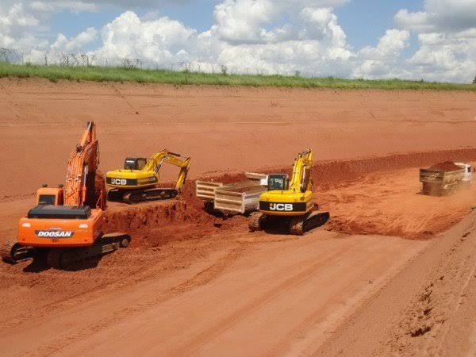
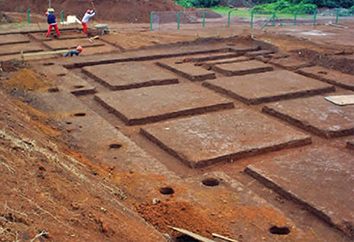
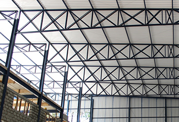
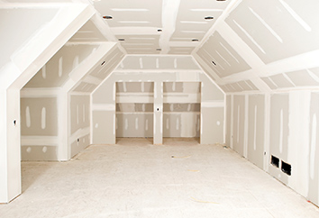
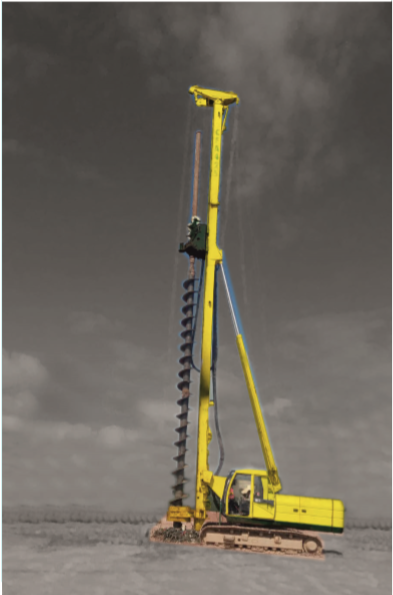

Consoares Construções
Tradição em Estrutura
Serviços
Conheça um pouco dos serviços
- Terraplanagem
- Fundação
- Estruturas
- Acabamentos
- WAD-Tecnologia Ambiental
A terraplanagem, como o próprio nome indica, é a colocação ou a retirada de terra para deixar um terreno plano, resolvendo diversos tipos de problemas que podem dificultar a construção.
A fundação é um termo utilizado na engenharia para designar as estruturas responsáveis por transmitir as solicitações das construções ao solo. Em geral, são utilizadas várias fundações seguidas para esse fim. Existem diversos tipos de fundação e são projetedas levando em consideração a carga que recebem e o tipo de solo onde vão ser construídas.
A estrutura metálica compreende os tipos de elementos estruturais e portantes que constituem o esqueleto de um edifício ou outra construção. Esta estrutura é usada frequentemente para nos referirmos ao conjunto de todos os elementos em aço galvanizado, perfis de baixa espessura e enformados a frio. Também denominada Light Steel Framing ou Estruturas Ligeiras em Aço.
É uma tecnologia que substitui as vedações internas convencionais (paredes, tetos e revestimentos) de edifícios de quaisquer tipos, consistindo de chapas de gesso aparafusadas em chapas de aço galvanizado. O sistema drywall consiste numa edificação de paredes de gesso que são mais leves e com espessuras menores que as das paredes de alvenaria. São chapas fabricadas industrialmente mediante um processo de laminação contínua de uma mistura de gesso, água e aditivos entre duas lâminas de cartão. Tais sistemas são usados somente em ambientes internos das edificações, para os fechamentos externos, o sistema deverá utilizar perfis de aço estruturais (steel frame) e chapas cimentícias (resistentes à ação de ventos e chuvas).
A consciência ambiental e as exigências legais em relação ao descarte apropriado de resíduos sólidos têm crescido ao redor do mundo. No Brasil não é diferente. O fechamento de lixões ou sua adequação para aterros sanitários tem obrigado as empresas a implantar controles geotécnicos e ambientais para atender os órgãos reguladores e proteger a população ao seu redor.
Nossa Empresa
A Consoares Construções é uma empresa do ramo da construção civil e nosso maior objetivo é realizar obras com planejamento, organização e qualidade. Executamos obras de todos os portes com eficiência, fornecendo assim toda a mão de obra e materiais necessários para a realização das tarefas.
Para maior comodidade de nossos clientes realizamos primeiramente o planejamento de execução, de custos e cronograma do projeto, antecipando nossas ações e prevenindo possíveis imprevistos que possam interferir no andamento do projeto. Seguimos e executamos exatamente as necessidades do cliente e fazemos o gerenciamento de todo o processo.